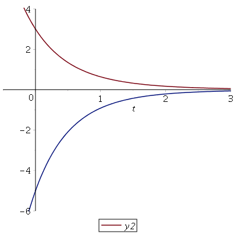
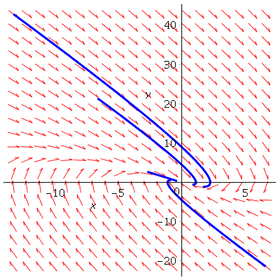
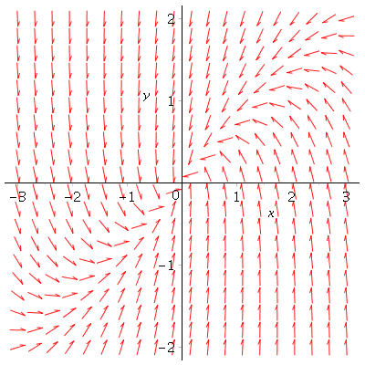
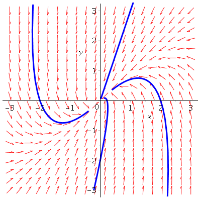

| > | restart; |
| > | with(DEtools): |
Solve the system of first order linear differential equations.
Example 1: Plot the solution to y'' + 3y' +2y = 0, first as individual components (y(t) and y'(t) versus t)
and then the phase field plot (y vs y') including direction field arrows.
| > | ode1:= diff(y(t),t$2) + 3*diff(y(t),t) + 2*y(t) = 0; |
| (1) |
| > |
soln1 := dsolve( {ode1} );
| (2) |
| > | ode2:= D(x)(t)=y(t), D(y)(t)=-2*x(t)-3*y(t); |
| (3) |
| > | soln2 := dsolve( {ode2} ); |
| (4) |
| > |
| > | y1 := c1*exp(-t) + c2*exp(-2*t); |
| (5) |
| > | y2 := -c1*exp(-t) - 2*c2*exp(-2*t); |
| (6) |
| > | plot( subs({c1=1, c2=2}, [y1, y2]), t=-3..3, legend=['y2', 'y2'] ); |
|  |
| > | DEplot( [D(x)(t)=y(t), D(y)(t)=-2*x(t)-3*y(t)], [x(t), y(t)], t=-3..3, x=-3..3, y=-2..2 ); |
 |
Add some solution curves by providing a list of 4 different initial conditions.
| > | phaseportrait( [D(x)(t)=y(t), D(y)(t)=-2*x(t) -3*y(t)], [x(t), y(t)], t=-1..1, [[x(0)=1,y(0)=1], [x(0)=2,y(0)=2], [x(0)=-1,y(0)=1], [x(0)=-1,y(0)=-1]], linecolor='blue' ); |
|  |
Example 2: Do the same for the circuit problem.
| > | DEplot( [D(x)(t) = -1/2*x(t) - 1/2*y(t), D(y)(t) = 3/2*x(t) - 5/2*y(t)], [x(t),y(t)], t=-3..3, x=-3..3, y=-2..2 ); |
|  |
| > | phaseportrait( [D(x)(t) = -1/2*x(t) - 1/2*y(t), D(y)(t) = 3/2*x(t) - 5/2*y(t)], [x(t),y(t)], t=-2..2, [[x(0)=1,y(0)=3], [x(0)=0,y(0)=-2], [x(0)=-2,y(0)=0], [x(0)=2,y(0)=0]], x=-3..3, y=-3..3, linecolor='blue' ); |
|  |
| > |
| > |